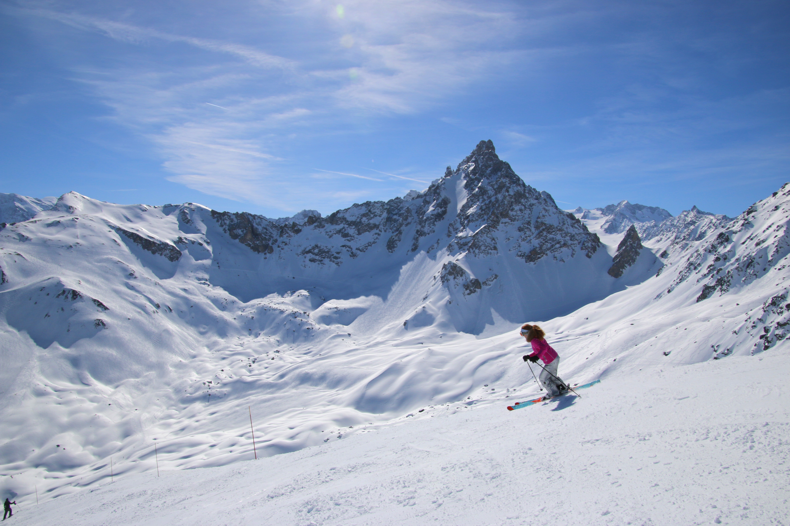
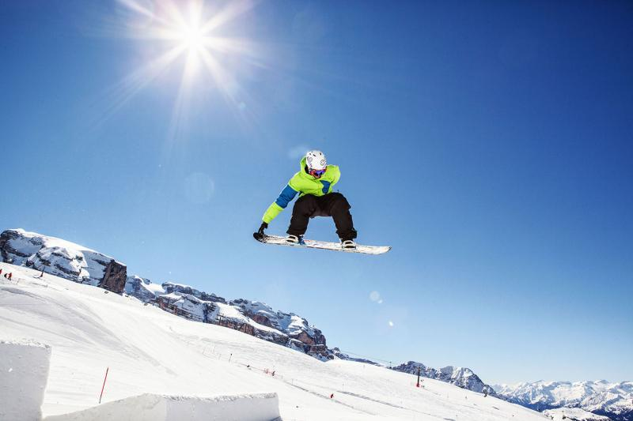
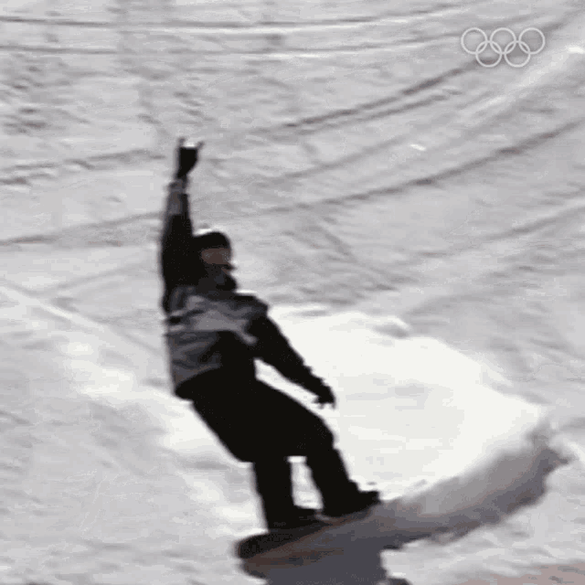

ABOUT ME!!!
Hey there! I’m Lucas Snow, a lifelong adventurer with a serious passion for winter sports—especially snowboarding. Whether I’m carving through fresh powder in the Alps or tackling rugged trails in the Dolomites, I’m always chasing that next thrill. My love for the mountains inspired me to start a business that helps others experience the magic of snow-covered landscapes. Through my website, I share stories from my travels, highlight top destinations, and offer trip planning services for fellow snow lovers. If you're looking for your next snowy escape, you're in the right place!
Recent Trips
Skiing in the French Alps
I just got back from an incredible skiing trip in the Alps, and it was everything I hoped for. Each day was packed with fresh powder, challenging trails, and stunning mountain views that made every run unforgettable. I had my snowboard strapped on, my dog by my side, and a grin I couldn’t wipe off. In the evenings, I kicked back in cozy lodges, swapped stories with fellow adventurers, and indulged in some amazing local food. The whole experience reignited my passion for winter sports and gave me the push to start building a website to share my adventures and help others plan their own.

Snowboarding in the Dolomites
Snowboarding in the Dolomites was absolutely unreal. The jagged peaks and dramatic cliffs made every descent feel like an epic adventure. I spent my days weaving through powdery trails and catching breathtaking views at every turn. The terrain was a mix of smooth runs and steep drops—perfect for pushing my limits. After a long day on the board, I’d relax in rustic mountain huts, soaking in the alpine vibe and planning my next ride. It’s one of those trips I’ll be talking about for years.

See More Trips Below!!!
